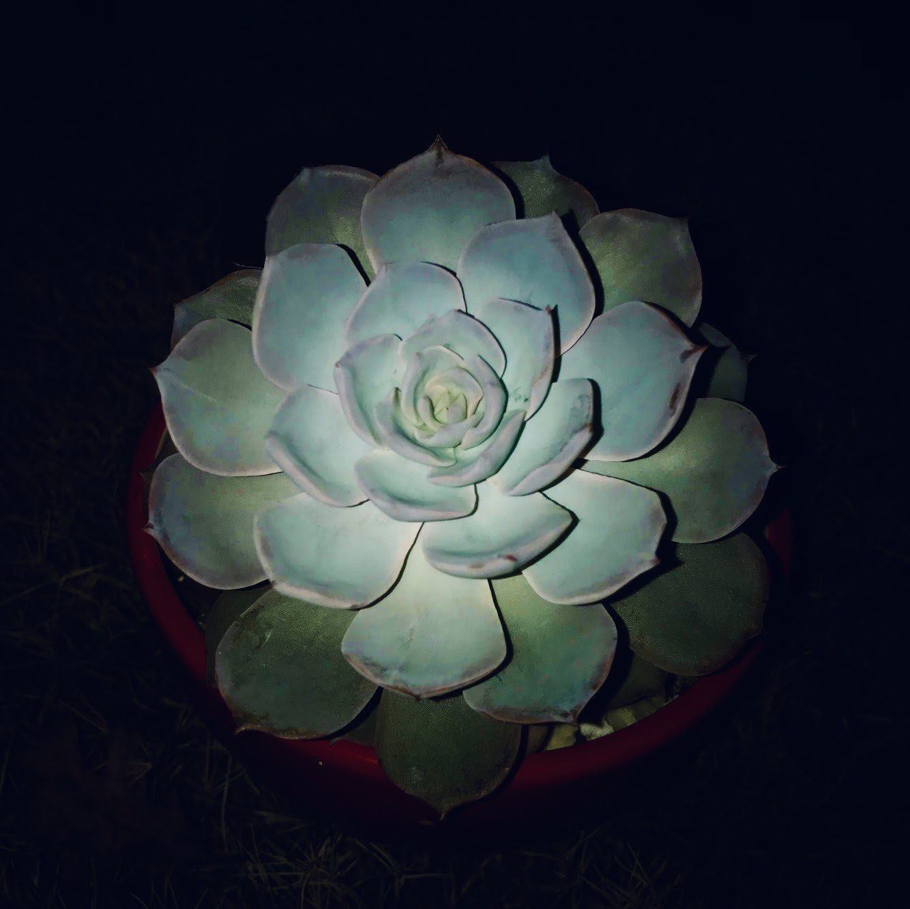

Taking Care

Succulents are a good houseplant and are very simple to take care of.
They do not require much attention to, but can die very easily if not cared for properly.
Here are some ways to take good care of your succulent plant.
- Sunlight: Make sure your succulent in places in an area with plenty of sunlight. They need only about 6 hours a day and young succulents require gradual sunlight exposure.
- Water: Each plant is different so do some research on what succulent plant it is first and then proceed to water. Make sure to also blow away droplets on it.